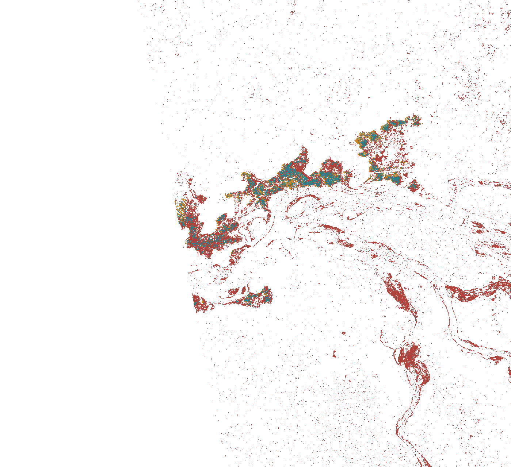
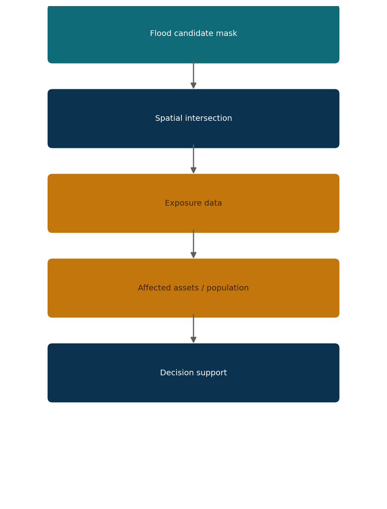
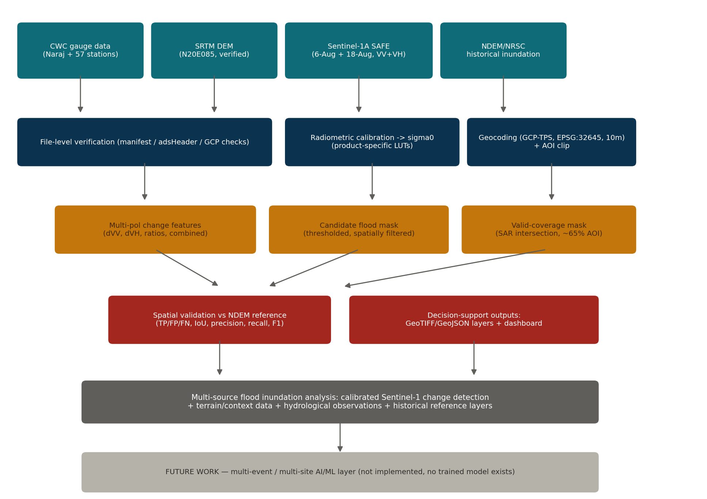
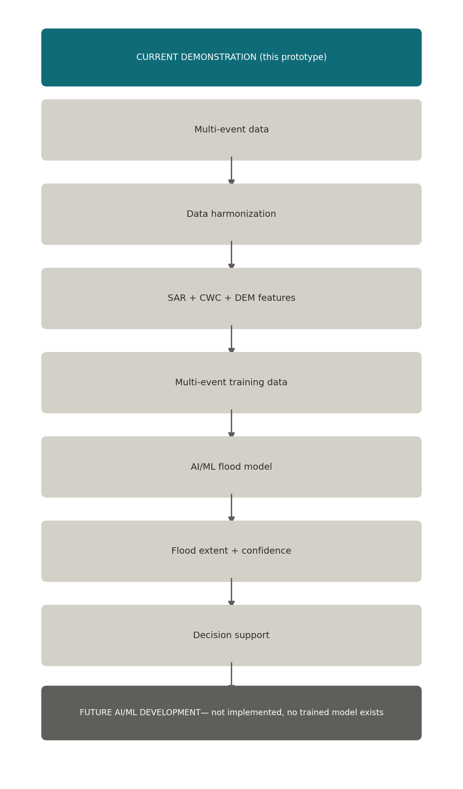

Flood Evolution — August 2022
Flood conditions evolve over time — the platform integrates observations across the event rather than a single static map. Click a date.
SAR Analysis — Four-Stage Story
Calibrated, geocoded Sentinel-1 sigma0. Darker is not automatically water — this is backscatter intensity, not a flood classification. Step through the stages below.
Pre/During-Flood Raw Data Sanity Check
Raw digital numbers (uncalibrated), for visual reference only — predates calibration.
SAR Candidate Flood Mask DERIVED
Generated independently from calibrated Sentinel-1 VV+VH change detection (6-Aug → 18-Aug), not copied from or fitted to the NDEM reference.
Why was this area flagged? Explain result
▸SAR Candidate vs. NDEM Reference REFERENCE-BASED
NDEM historical inundation is used here only to evaluate the independently-generated SAR candidate mask — it was not used to create it. Metrics computed only within the ~65% of the AOI actually covered by both Sentinel-1 scenes.

Disagreement is shown, not hidden — this is where the prototype's current precision limitations are visible directly on the map.
Prototype-Stage Spatial Agreement Metrics
Relative Elevation Scenario DERIVED
This is not a water-level-to-flood-depth prediction. The scale is a relative terrain threshold, not a CWC gauge reading — the current demonstration does not convert CWC gauge levels (meters) into absolute terrain elevation, because that vertical-datum crosswalk is unresolved (see Data & Methodology tab). This control illustrates the DEM-threshold mechanism only, not a flood forecast for any given water level.
Exposure & Decision Support NEXT INTEGRATION LAYER
How a verified flood extent would connect to exposure/impact analysis, once that data exists. No infrastructure, population, or economic-loss figures are shown here — none have been obtained or verified in this project.

Data Confidence, Methodology & Technical Status
What's verified against source data, what's derived from it, and what genuinely remains outstanding: 18-Aug noise correction, the approximate (GCP-TPS, not full terrain-correction) geocoding method, the ~65% SAR coverage extent, the unoptimized 3 dB candidate threshold, and the CWC-to-DEM vertical datum crosswalk. None of these block the candidate mask shown in the SAR Analysis tab — they define its current precision, which is reported honestly there.
System Architecture & Generalization
The pipeline is data-source-agnostic: swap in another station's CWC series, DEM tile, and Sentinel-1 pair, and the same stages run. The only part of this diagram that does not exist yet is the AI/ML layer at the bottom — explicitly future work, not a claim about the current system.

Next-Generation AI/ML Pipeline FUTURE WORK
The candidate mask shown in this prototype is a rule-based change-detection result, not an AI/ML prediction. No trained model exists in this project. The diagram below distinguishes the current demonstration from the future development path.
